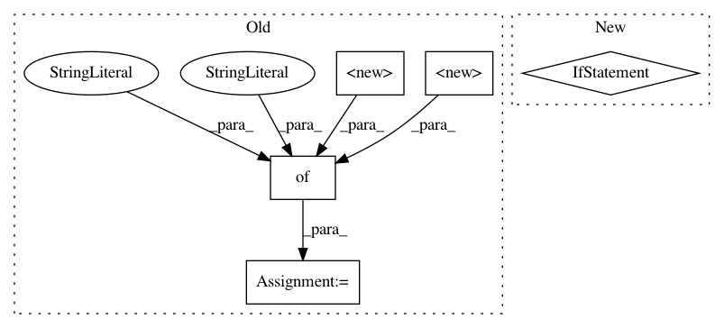

070259ba60b6623a3ff8db7b5f57c3972d0ff2b1,examples/mujoco_all_ray.py,,run_experiment,#Any#Any#,142
Before Change
preprocessing_layer_sizes = policy_params.get(
"preprocessing_layer_sizes")
if preprocessing_layer_sizes is not None:
nonlinearity = {
None: None,
"relu": tf.nn.relu,
"tanh": tf.nn.tanh
}[policy_params["preprocessing_output_nonlinearity"]]
observations_preprocessor = MLPPreprocessor(
env_spec=env.spec,
layer_sizes=preprocessing_layer_sizes,
output_nonlinearity=nonlinearity)
else:
observations_preprocessor = None
policy_s_t_layers = policy_params["s_t_layers"]
After Change
reg=1e-3,
)
elif policy_params["type"] == "lsp":
if preprocessor_params:
preprocessor_fn = PREPROCESSOR_FUNCTIONS[
preprocessor_params.get("function_name")]
preprocessor = preprocessor_fn(
*preprocessor_params.get("args", []),
**preprocessor_params.get("kwargs", {}))
else:
preprocessor = None
policy_s_t_layers = policy_params["s_t_layers"]
policy_s_t_units = policy_params["s_t_units"]
s_t_hidden_sizes = [policy_s_t_units] * policy_s_t_layers
In pattern: SUPERPATTERN
Frequency: 3
Non-data size: 5
Instances
Project Name: rail-berkeley/softlearning
Commit Name: 070259ba60b6623a3ff8db7b5f57c3972d0ff2b1
Time: 2018-07-17
Author: kristian.hartikainen@gmail.com
File Name: examples/mujoco_all_ray.py
Class Name:
Method Name: run_experiment
Project Name: rail-berkeley/softlearning
Commit Name: 5c6c420783b95425cef7648a589785d3ab668b5c
Time: 2018-05-22
Author: kristian.hartikainen@gmail.com
File Name: examples/mujoco_all_sac_lsp.py
Class Name:
Method Name:
Project Name: rail-berkeley/softlearning
Commit Name: 1f6686d765052c874dcf28f8036acde742decd79
Time: 2019-04-26
Author: 31363575+Alacarter@users.noreply.github.com
File Name: softlearning/environments/utils.py
Class Name:
Method Name: